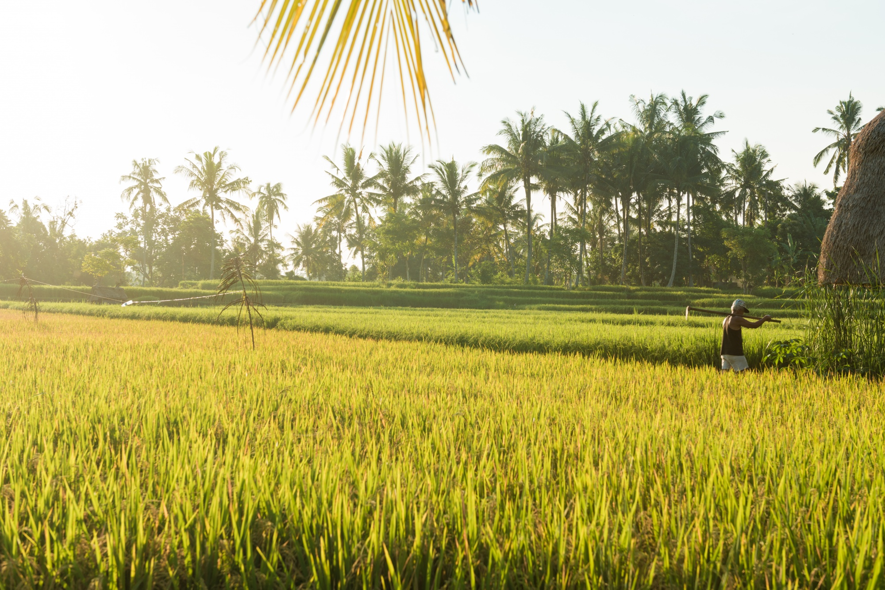
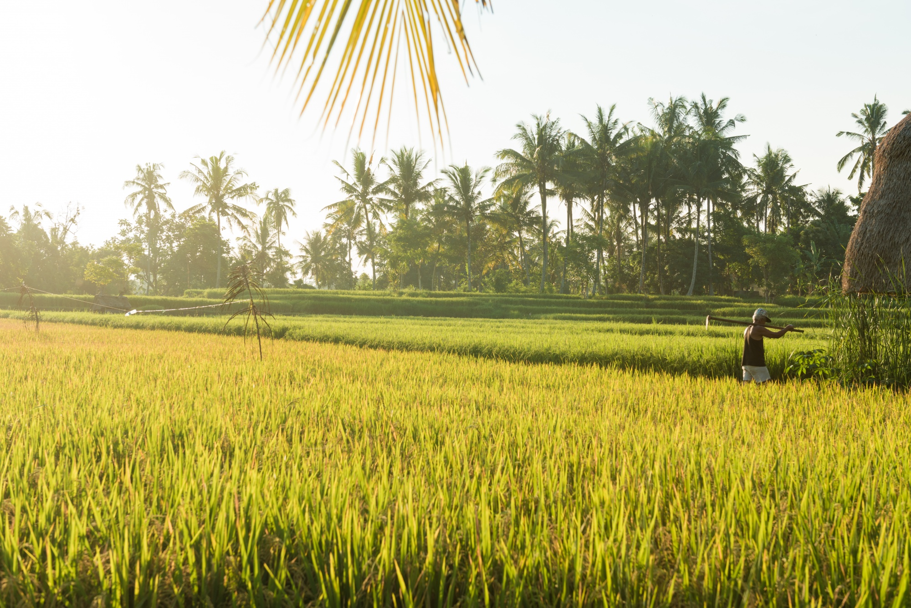

.
Real-World Success Stories

Case Study: Green Farm Initiative
Location: California, USA
Challenge: Facing severe drought, high irrigation costs, and soil erosion.
Steps Taken: Adopted drip irrigation, crop rotation, and organic composting techniques.
Results: Reduced water usage by 40%, increased crop yield by 30%, and improved soil health.
Before & After Photos


"These methods not only helped us save water but also brought our soil back to life. We now have better yields and more sustainable practices." - John Doe, Farmer

Case Study: Eco-friendly Orchards
Location: Oregon, USA
Challenge: Excessive pesticide use leading to decreased pollination and soil quality.
Steps Taken: Implemented integrated pest management, planted cover crops, and used organic pesticides.
Results: Increased pollination, reduced pesticide use by 60%, and improved fruit quality.
Before & After Photos


"Our orchard has never been healthier. The eco-friendly methods have rejuvenated our land and the community is more supportive than ever." - Jane Smith, Orchard Owner
Case Study: Sustainable Rice Farming
Location: Vietnam
Challenge: Overuse of water in rice paddies and inefficient crop production.
Steps Taken: Introduced water-saving irrigation, diversified crops, and improved soil management.
Results: Reduced water usage by 50%, improved biodiversity, and doubled rice yields.
Before & After Photos
 

"By conserving water and improving soil health, we've not only increased yields but also created a more sustainable farming practice." - Thanh Nguyen, Rice Farmer